获取天气情况
Update history
| Date | Version | Author | Update content |
|---|---|---|---|
| 2024-12-05 | 1.0.1 | 老怪鸽 | 更新了基本文档 |
硬件准备
你只需要有一个ESP32S3开发板。我目前使用的是：立创开发板的立创·ESP32S3R8N8开发板。
购买地址：立创·ESP32S3R8N8 开发板
和风天气API
和风天气介绍
和⻛天气是中国领先的气象科技服务商、国家高新技术 企业，致力于运用先进气象模型结合大数据、人工智能 技术发展智慧型气象服务。
他们的业务包括气象数据分发、地理信息、气象可视 化、个人气象服务等，在全球10个国家建有数据中心， 为300余家中国及全球企业、50万开发者提供优质的数 据服务。
另外的话
和风天气支持用户免费使用订阅，只是一个用户只能创建一个项目API，但是对我们来说已经足够了，感谢和风天气！
创建自己的天气API
请前往 和风天气API 官网，注册账号并进入控制台。
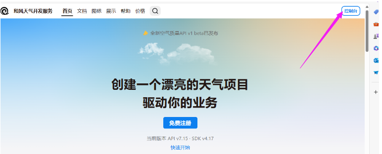
关于和风天气的API介绍和开发文档，参考控制台处的介绍：
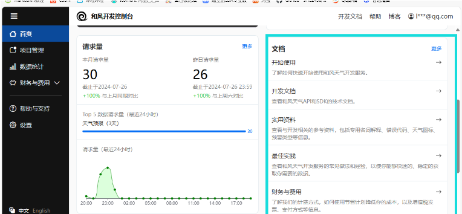
开始创建属于我们的API !
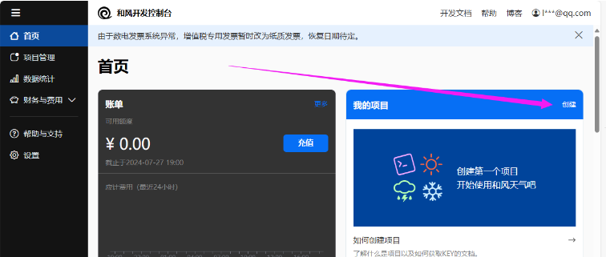
和风天气项目创建参数填写：
完成创建！
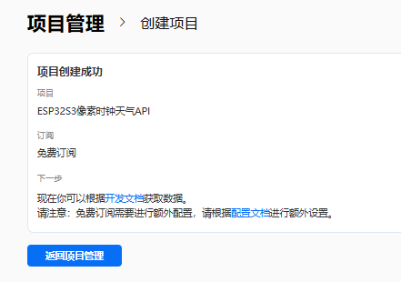
API介绍
和风天气的 API介绍网页 如下：
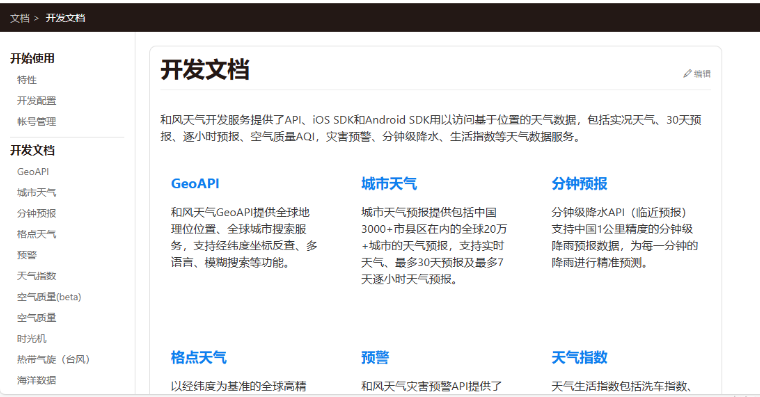
本文将用的API是城市天气 -> 每日天气预报 -> 3天预报API 。【API的详细介绍页点我】
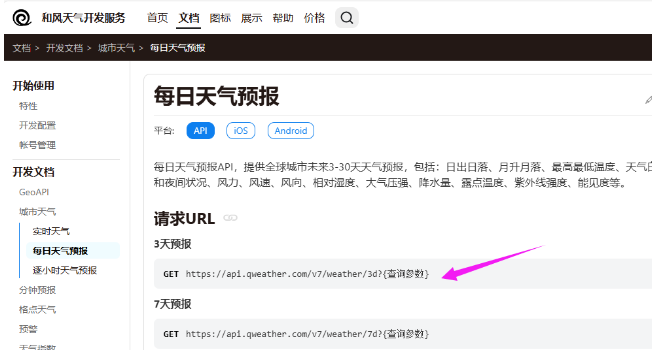
需要注意的是，如果是免费订阅，要将API Host更改为
devapi.qweather.com。
这里以获取深圳3天的天气预报为例，关键的API参数说明如下：
https://devapi.qweather.com/v7/weather/3d?location=101280601&key=YOUR_KEY
请求参数包括必选和可选参数，参数之间使用&进行分隔。这里只给大家介绍必填项。
1. key(必选) ： 用户认证key，请参考如何获取你的KEY。
2. location(必选) ： 需要查询地区的LocationID或以英文逗号分隔的经度,纬度坐标（十进制，最多支持小数点后两位），LocationID可通过GeoAPI获取。例如 location=101010100 或 location=116.41,39.92
关于这个LocationID需要各位自行根据和风天气官方的github地址查询，这里我找到深圳的LocationID为：101280601
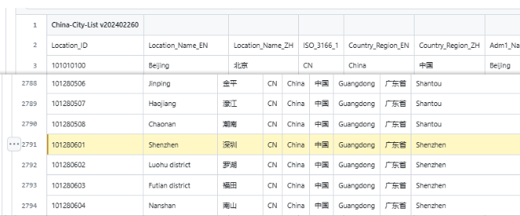
手动验证API是否正确
首先回到你的和风天气管理台。你会看到你新建的项目。
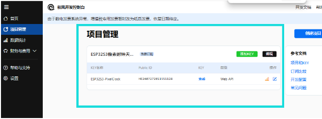
复制你的密钥KEY。
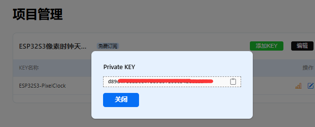
然后将你的KEY填充到下方API的YOUR_KEY中
下方这个是获取深圳3天的天气预报API，只剩KEY没有填写
https://devapi.qweather.com/v7/weather/3d?location=101280601&key=YOUR_KEY
例如我的KEY是 ABCasdsdgsdfgdsgdfgdf，则我的API是
https://devapi.qweather.com/v7/weather/3d?location=101280601&key=ABCasdsdgsdfgdsgdfgdf
填写你的KEY后，直接复制该API，将它作为网址跳转到对应页面，你就会看的返回的天气数据。
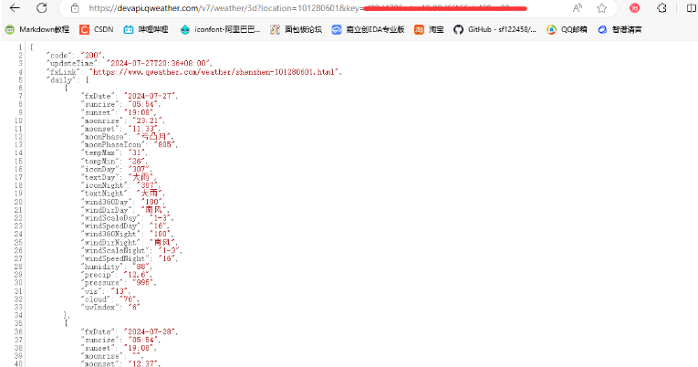
关于API返回的数据具体的意思是什么，参考该API的介绍页。
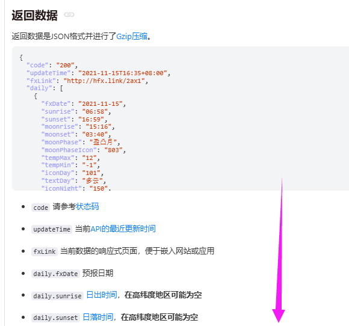
根据返回的参数说明，这里我关注的是4个数据：
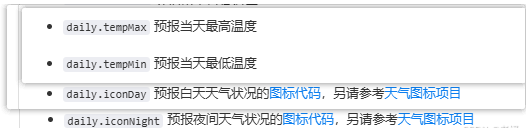
图标代码的说明：返回的数据中关于天气的说明只有空落落的数字，这些数字在API说明中代表着各个天气情况。数字对应的天气情况链接。
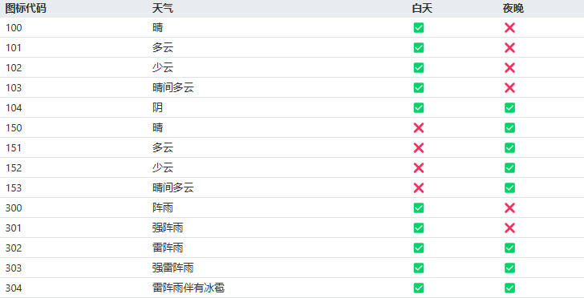
到这里我们就已经是准备好了，接下来可以上工程代码了。请准备好你的完整API和KEY。
工程创建
在VSCode中打开PlatformIO扩展创建名为weather的 Espressif ESP32-S3-DevKitM-1 工程。
关于详细图文创建工程的过程请参考👉RTC时钟驱动章节的工程创建小节。
安装驱动库
在驱动库下载界面，搜索ArduinoJson，安装来自Benoit Blanchon 的 ArduinoJson库。将该库安装到我们的工程之中。
关于详细图文安装驱动库的过程请参考👉RTC时钟驱动章节的安装驱动库小节。
安装完成之后，打开platformio.ini文件，应该可以看到已经安装上了驱动库。
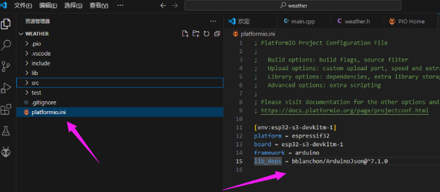
这里还有一个问题，和风天气API返回的JSON格式是带了Gzip压缩的。
为了能够在ESP32S3中进行Gzip的解压操作，引用了github上的一个开源项目，来自pfalcon的uzlib。感谢伟大的开源贡献者！
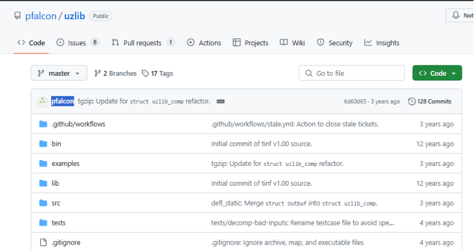
在我们的工程中，去lib文件夹下新建一个文件夹uzlib，将仓库中的 src 文件夹下的文件全部拉下来保存在我们在工程中新建的uzlib文件夹下。
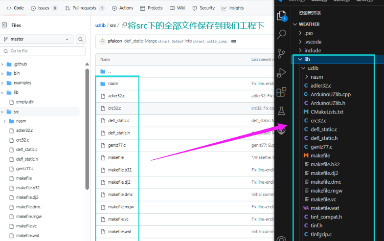
编辑代码
在工程中的src文件夹下的新建 weather.cpp 文件。
往 weather.cpp 中写入如下代码：
#include "weather.h"
Weather::Weather(String apiKey, String location)
{
this->apiKey = apiKey;
this->location = location;
}
bool Weather::update()
{
HTTPClient http; //用于访问网络
WiFiClient *stream;
int size;
http.begin("https://devapi.qweather.com/v7/weather/3d?location="+ this->location + "&key=" + this->apiKey); //获取近三天天气信息
int httpcode = http.GET(); //发送GET请求
if(httpcode > 0)
{
if(httpcode == HTTP_CODE_OK)
{
stream = http.getStreamPtr(); //读取服务器返回的数据
size = http.getSize();
}
}
else
{
Serial.printf("[HTTP] GET... failed, error: %s\n", http.errorToString(httpcode).c_str());
}
http.end(); //结束当前连接
uint8_t inbuff[size];
stream->readBytes(inbuff, size);
uint8_t *outbuf = NULL;
uint32_t out_size = 0;
int result = ArduinoUZlib::decompress(inbuff,size, outbuf, out_size);
deserializeJson(doc, outbuf);
today = doc["daily"][0].as<JsonObject>();
tomorrow = doc["daily"][1].as<JsonObject>();
return true;
}
//获取天气数据中的当天最高气温数据
int Weather::getTempMax(bool is_today)
{
if(is_today)
{
return today["tempMax"].as<int>();
}
else
{
return tomorrow["tempMax"].as<int>();
}
}
//获取天气数据中的当天最低气温数据
int Weather::getTempMin(bool is_today)
{
if(is_today)
{
return today["tempMin"].as<int>();
}
else
{
return tomorrow["tempMin"].as<int>();
}
}
//获取天气数据中的天气标识代码
int Weather::getWeather(bool is_today, bool is_day)
{
if(is_today)
{
if(is_day)
return today["iconDay"].as<int>();
else
return today["iconNight"].as<int>();
}
else
{
if(is_day)
return tomorrow["iconDay"].as<int>();
else
return tomorrow["iconNight"].as<int>();
}
}
在工程中的include文件夹下的新建 weather.h 文件。
往 weather.h 中写入如下代码：
#ifndef _WEATHER_H
#define _WEATHER_H
#include "Arduino.h"
#include "ArduinoJson.h"
#include "ArduinoUZlib.h"
#include "HTTPClient.h"
//定义天气类
class Weather
{
public:
Weather(String apiKey, String location);
bool update(); //发送一次请求信息，获取天气数据
//只需要今明日的天气与温度，故仅设置了以下若干函数
int getTempMax(bool is_today);
int getTempMin(bool is_today);
int getWeather(bool is_today, bool is_day);
private:
String apiKey; //天气API密钥
String location; //地点
StaticJsonDocument<2048> doc; //Json容器
JsonObject today, tomorrow; //可根据返回的json信息自行定义其他天气数据
};
#endif
打开工程下的src文件夹下的main.cpp，并且写入如下代码：
#include <Arduino.h>
#include <WiFi.h>
#include "weather.h" //定义Weather类，用于解析Json数据并返回天气数据
//WIFI
#define WIFI_SSID "lckfb" //要连接的WIFI名称
#define WIFI_PASSWORD "12345678" //要连接的WIFI密码
#define WIFI_RETRY_COUNT 20 //WIFI连接重试数
//和风天气预报
#define USER_KEY "d89d4706adcc4fb89d6f166cb420ee39" //密钥
#define LOCATION_ID "101280601" //地点标识：深圳
int weatherid; //根据和风天气API返回的天气ID显示对应天气
bool is_day = 1; //白天为1，夜晚为0
bool is_today = 1; //今天为1，明天为0
//创建天气对象
Weather weather(USER_KEY, LOCATION_ID);
//根据和风天气API返回天气标识
void WeatherIcon(int weatherid)
{
switch(weatherid)
{
case 100://白天晴
Serial.println("白天晴\r\n");
break;
case 101://多云
case 102://少云
case 151://夜间多云
case 152://夜间少云
case 103://晴间多云
Serial.println("多云\r\n");
break;
case 104://阴天
Serial.println("阴天\r\n");
break;
case 150://夜间晴朗
Serial.println("夜间晴朗\r\n");
break;
case 153://夜间晴间多云
Serial.println("夜间多云\r\n");
break;
case 305://小雨
case 309://毛毛雨/细雨
Serial.println("小雨\r\n");
break;
case 300://阵雨
case 350://夜间阵雨
case 306://中雨
case 399://雨
case 313://冻雨
case 314://小到中雨
Serial.println("阵雨\r\n");
break;
case 301://强阵雨
case 351://夜间强阵雨
case 307://大雨
case 308://极端降雨
case 310://暴雨
case 311://大暴雨
case 312://特大暴雨
case 315://中到大雨
case 316://大到暴雨
case 317://暴雨到大暴雨
case 318://大暴雨到特大暴雨
Serial.println("大雨\r\n");
break;
case 302://雷阵雨
Serial.println("雷阵雨\r\n");
break;
case 303://强雷阵雨
Serial.println("强雷阵雨\r\n");
break;
//雪天
case 400://小雪
case 401://中雪
case 402://大雪
case 403://暴雪
case 404://雨夹雪
case 405://雨雪天气
case 406://阵雨夹雪
case 407://阵雨夹雪
case 408://小到中雪
case 409://中到大雪
case 410://雪
case 456://阵雨夹雪
case 457://阵雪
case 499://雪
Serial.println("雪天\r\n");
break;
//雾霾
case 500://薄雾
case 501://雾
case 509://浓雾
case 510://强浓雾
case 514://大雾
case 515://特强浓雾
Serial.println("雾天\r\n");
break;
case 502://霾
case 511://中度霾
case 512://重度霾
case 513://严重霾
Serial.println("雾霾\r\n");
break;
}
}
void setup()
{
int count = 0;
char disp_buf[50]={0};
//串口初始化
Serial.begin(9600);
//尝试连接WIFI网络
WiFi.begin(WIFI_SSID, WIFI_PASSWORD);
//尝试连接直至超时
while (WiFi.status() != WL_CONNECTED)
{
count++;
if (count > WIFI_RETRY_COUNT)
{
Serial.println("\r\nconnection failed.\r\n");
break;
}
delay(500);
Serial.print(".");
}
//获取天气数据
weather.update();
//WIFI断开连接
WiFi.disconnect();
//显示最低与最高温度
sprintf(disp_buf, "TempMin = %d", weather.getTempMin(is_today));
Serial.println(disp_buf);
sprintf(disp_buf, "TempMax = %d", weather.getTempMax(is_today));
Serial.println(disp_buf);
//显示天气标识代码
sprintf(disp_buf, "WeatherCode = %d", weather.getWeather(is_today, is_day));
Serial.println(disp_buf);
//根据天气标识代码确定天气
WeatherIcon(weather.getWeather(is_today, is_day));
}
void loop()
{
delay(1000);
}
代码验证
代码编写完成之后，将ESP32S3开发板接入电脑下载代码，然后打开串口监视器查看现象。
下载步骤请参考👉RTC时钟驱动章节的代码验证小节。
实际获取天气数据的效果如下：
最低温度26，最高温度31，天气代码为307，对应的就是大雨。
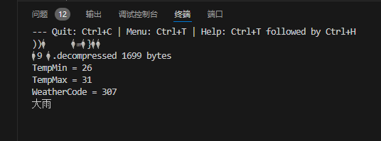
查看和风天气的API中天气代码说明，确认数据是正确的。
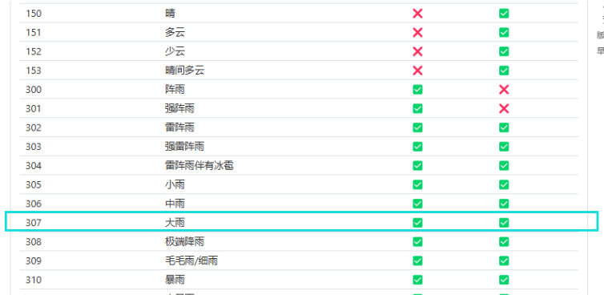
说明：如果你根据代码操作运行不起来，可以下载👉例程看看